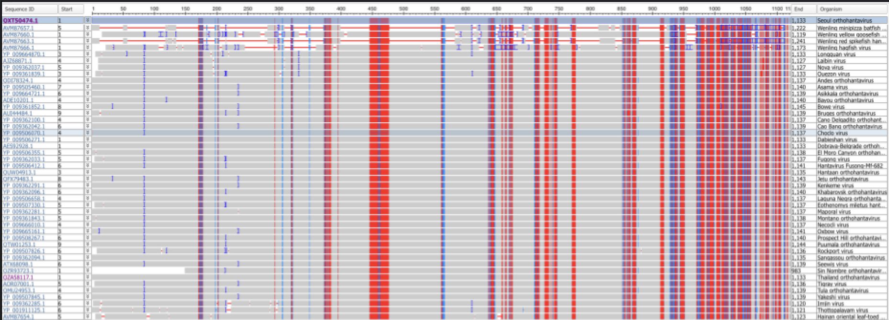

Pan-Hantavirus CD4+ Epitope Identification for Broad-Spectrum Vaccine Design
Using immunoinformatics approaches to identify conserved CD4+ epitopes for potential pan-hantavirus vaccine constructs.
Project Motivation
Hantaviruses represent an emerging public health threat due to their high mortality rates, high intrinsic mutation rate, and ability to recombine. This necessitates the construction of broadly protective vaccines against all hantavirus strains.
This project explored whether conserved CD4+ epitopes could be identified across known hantavirus genomes with the long-term goal of informing pan-hantavirus vaccine design.
My Role
This was an independent research project conducted under the mentorship of Dr. Melissa Willis at the Academies of Loudoun.
My work focused on computational epitope discovery, sequence analysis, immunoinformatics pipeline development, and biological interpretation of candidate vaccine targets.
Approach
An immunoinformatics workflow was developed to identify conserved candidate CD4+ epitopes across indexed hantavirus genomes.
Genome Acquisition
Collection of indexed hantavirus genomes from NIH GenBank.
Sequence Alignment
Multiple sequence alignment to identify conserved regions across species using NCBI COBALT.
Epitope Isolation
Isolation of candidate 11+ mer conserved peptide sequences using EMBOSS cons.
MHC-II Binding Prediction
Computational prediction of CD4+ MHC-II binding potential using the Immune Epitope Database Tools.
Epitope Filtering
Screening for antigenicity, allergenicity, and toxicity using VaxiJen V.2.0, AllerTop V.2.0, and ToxinPred.
Candidate Selection
Determination of conserved candidate epitopes for future analysis.
Results
Computational analysis identified nine candidate conserved CD4+ epitopes that satisfied filtering criteria for predicted MHC-II binding, antigenicity, allergenicity, and toxicity.

Figure 1. Multiple sequence alignment of indexed hantavirus genomes used to identify conserved regions across hantavirus species.
| Conserved Sequence |
|---|
| xxxxxxxxxxxlxLLxVLxxvxxxxxxxxRNVYELKLECPHTVxxxxGExxxxxxxxxVxGSVELPxIxLxEVxxxxxxSLKxIESSCNFDIHxSxxxxQxFTQVtWxKKAdxxxTxNASSTTFExxSsEVNLKGxxxxxxxLxxxxxCVIxxxIIExxxKxxxxRKTVICYDLSCNQTxxCKPTLHLIAPIxxxxxxxxxCxxMKSCLIxLGxxxxxxxxxxxxxxRIQVVYEKTYCVGMLxVEGKxCFxPxxTLxxxxxxxxxxxxSxxxxxxxxxxxxxxxxxxYDvxxxxxxxxxxxxTLPVxCFLxxxIaKKxxxxxxxxxxxxxxxxxxxxxxKIxExlEKIxxxxxkxxCTxxxxxENxxQGYYVCxIGxNSExIxVPSxDDxRSxExxIxxxxLSrMxxSPHGEDHxxxxxxDxxxxxxxSLRIAGxxxxIExxxxxKVxPxTESSDxLxxxQGIAFSGxPMYSSLxxSVLxKxDPxxKYVFSPGIIxxxxxPxxNxSxxxxxxxxxCDKKxLPLTWTGYxxIxIPGxxEKIxxxxxxxxxxxCTVFCTLSGPGASCEAYSExxxxxxxGIFNISSPTCLVNKxxRFRbSEQQIxFVCQRxxxxxxxxVDxDIVVYCxxNGQKKVILTKTLVIGQCIYTxTSLFSLLPxVAHSLAVELCVPGxHGWATIALLITFCFGWLLIPxITxIILKIxxxLKxIxxIxxxxxYNxESKFKxILEKIKEEYQKTMGSMVCDVCxxxxxxxxxxxKHECETxKELKAHKKSCPQGQCPYCMxxxExTESALQAHYKxVCKLTxxRFQEDLKKSIxxxxxxQxxGCxYRTLNIFRYKSRCYIxxVWIILLxIEsIIWAASAExxxxxxxxxxxxxxxxxxxxxxxxxxxxxxxxxxxxxxxxxxxxxxxxxxxxxxxxxxxxxxxxxxxxxxxxxxxxxxxxxxxxxxxxxxxxxxxxxxxxxxxxxxxxxxxxxxxxxxxxxxLEPxWNDxAxxxxxxxxxxxxxxxxxxxxxxxxHGVGxIPMxTDLELDFSLxxxxxxxxxxxxSSSxYTYRRKLxNPxNEEExIpFxHIQIEKQVIxAEVQxLGHWMDAxxxxNIKTAFHCYGACxxKYSYPWQTAxxxxxxxxCxFEKDYQYETxWGCNPxDxCPGVxxxxxxGTGCTACxGIYLDKLKxxxxxSVGxAYKIISLKYTRKVCVQLGxExxCKxIDSNDxxxxxxxCLVTxNVKVCMIGTVSKFxxQxGDTLLFLGPLExGGLIxKQWCTTTCQFGDPGDIMSxxNxGxxCPEYxGSFRKKCxFATTPVCEYxGNxVSGYKRMMATKDSFQSFNVTDxHxTxNKxxxxxxxxxxxxxLEWxDxxxxxxxxPDGxLRDHINIVVNxxxxxRDIxFxxxxxxxxxxxEDLSENPCKVxLqTxSIEGAWGSGVGFTLtCxVSLTECSxxTFLTSIKACDxxxAMCYGATSVTLVRGQNxTVxVxGKGGHSGSxxxxxkFKCCHDxDCSxxGLLASAPxxxxxxHLDRVTGxNQIDNDKVYDDGAPeCGIxCWFxKSGEWLmGILxNGNWMVVVVLIVILIISIILxSfLCPVRKxKKxxxxxxxxxxxxxxxxxxxx |
Figure 2. Conserved protein sequence identified across indexed hantavirus genomes. 11+ mers highlighted in orange. Origin of relevant epitopes highlighted in blue.
| ID | Sequence | MHC-II Binding | IFN-γ Binding | Antigenicity |
|---|---|---|---|---|
| R23 | WMVVVVLVVILIISI | 15.36 | 0.5503569 | 0.7584 |
| R24 | MVVVVLVVILIISII | 14.44 | 0.70655736 | 0.5976 |
| R25 | VVVVLVVILIISIIL | 8.714 | 0.83196286 | 0.5386 |
| W35 | HGWATIALLITFCFG | 32.8 | 0.48341312 | 0.5922 |
| W36 | GWATIALLITFCFGW | 36.2 | 0.86239409 | 1.0371 |
| W37 | WATIALLITFCFGWL | 33.18 | 0.55717861 | 0.9842 |
| W38 | ATIALLITFCFGWLL | 33.18 | 0.55775663 | 0.7756 |
| W39 | TIALLITFCFGWLLI | 37.78 | 0.74836939 | 0.8847 |
| W40 | IALLITFCFGWLLIP | 39.78 | 0.66385574 | 0.8248 |
Figure 3. Candidate conserved CD4+ epitopes following computational filtering.
Discussion & Limitations
The computational workflow successfully identified 9 candidate conserved CD4+ epitopes that satisfied filtering criteria for predicted MHC-II binding, antigenicity, allergenicity, and toxicity. These findings initially suggested that conserved regions capable of supporting broad-spectrum hantavirus vaccine design may exist across multiple hantavirus species.
However, subsequent analysis revealed that the majority of the conserved candidate sequences were localized within highly hydrophobic transmembrane regions associated with the viral glycoprotein and membrane interface. While these regions demonstrated strong sequence conservation, their hydrophobicity and membrane localization likely limit both synthesis feasibility and practical immunogenicity in vivo.
The location of the conserved sequences indicate that there is significant heterogeneity in glycoprotein structure, and that broad-spectrum vaccination is likely only possible for a smaller subset of hantaviruses. Vaccine efficacy is highly dependent on MHC-II and IFN-γ binding strength and an inability to find epitopes closer to the binding region indicate that a multi-epitope based vaccination strategy may not be the most effective.
Future Directions
Future work could focus on analyzing a more targeted set of clinically relevant hantavirus strains and evaluating whether functionally important viral motifs associated with infection could serve as more effective vaccine targets.
Additional investigation into the evolutionary dynamics and potential recombination patterns among hantavirus species may also help clarify the specific public health threats that may arise. This work could then be used to more effectively inform what defines a clinically relevant hantavirus strain.
Reflection
This project was my first major introduction to scientific research and computational biology. Through this work, I learned not only how computational methods can support therapeutic discovery, but also how scientific progress often comes from understanding why an approach does not work as expected.
More broadly, the project introduced me to scientific thinking, biological complexity, and the interdisciplinary nature of modern quantitative biology. It played a major role in shaping my interest in computational biology and systems-level approaches to research.
Selected References
- Hangarangi, M. et al. (2020). Hantavirus: An emerging global threat. DOI
- Liu, X. et al. (2020). Vaccine and Therapeutics against Hantaviruses. DOI
- Kim, W. K. et al. (2016). Genetic diversity and reassortment of Hantaan virus tripartite RNA genomes in nature, the Republic of Korea. DOI
- Ramsden, C. et al. (2008). High Rates of Molecular Evolution in Hantaviruses. DOI